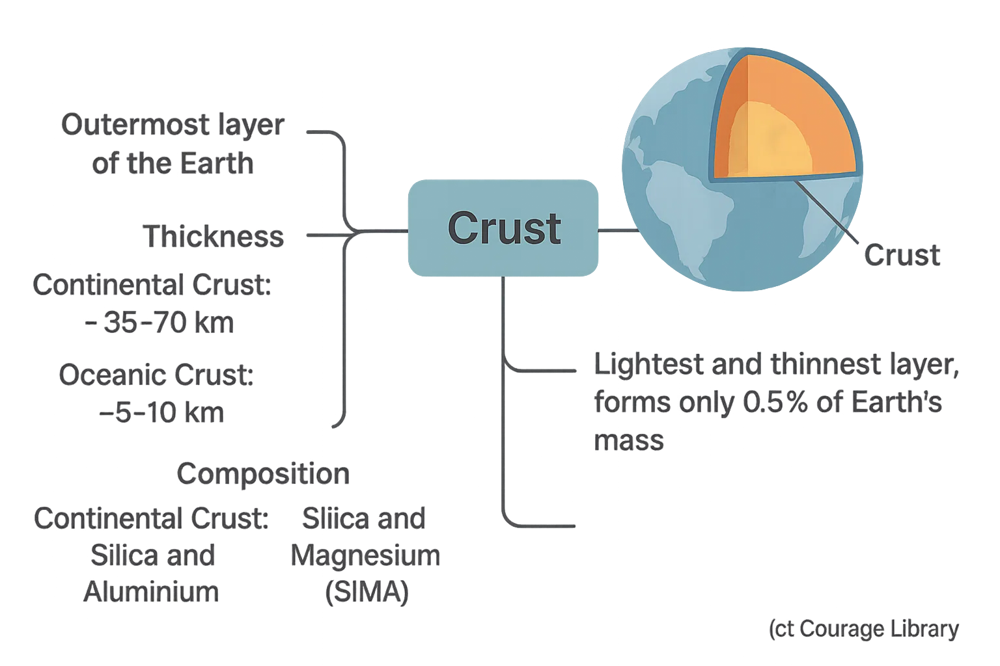
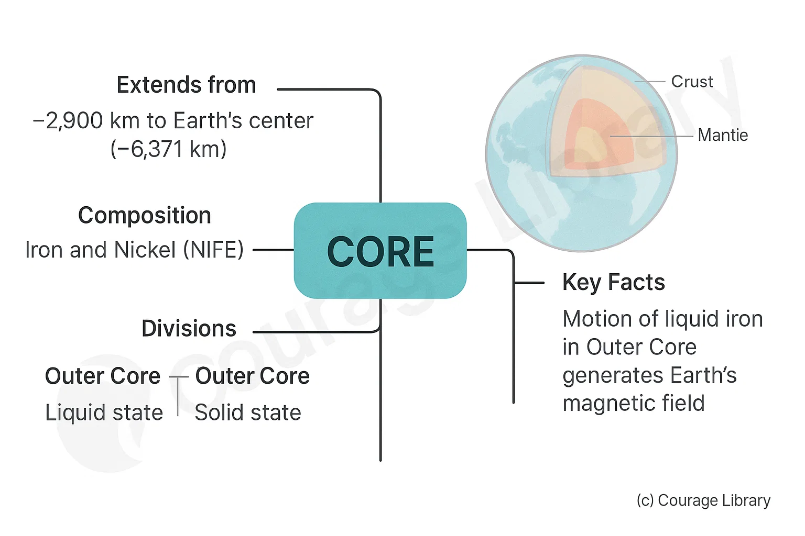
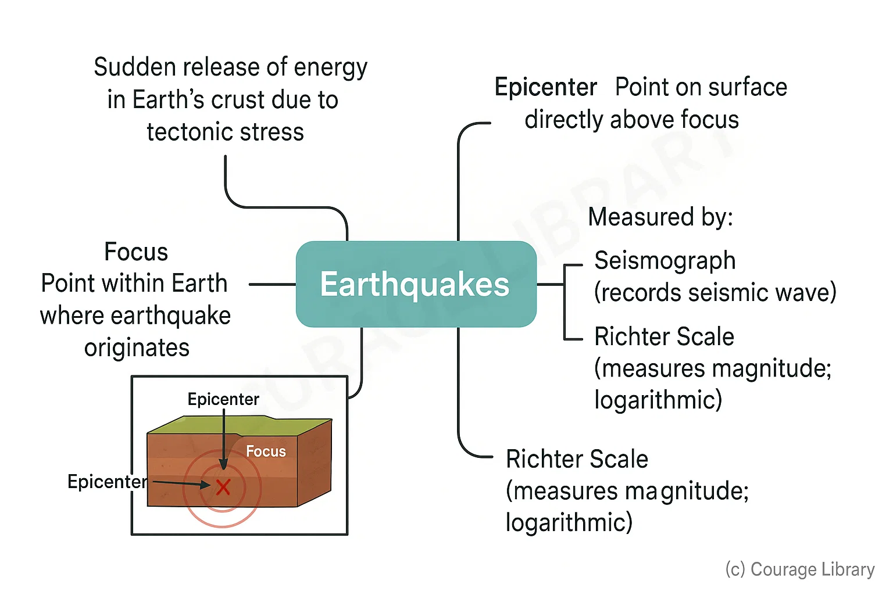
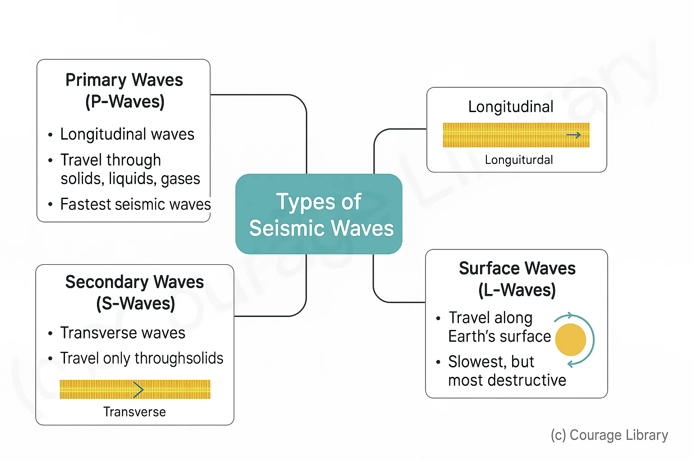
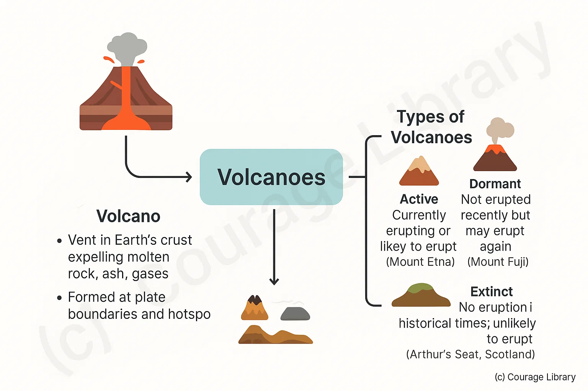
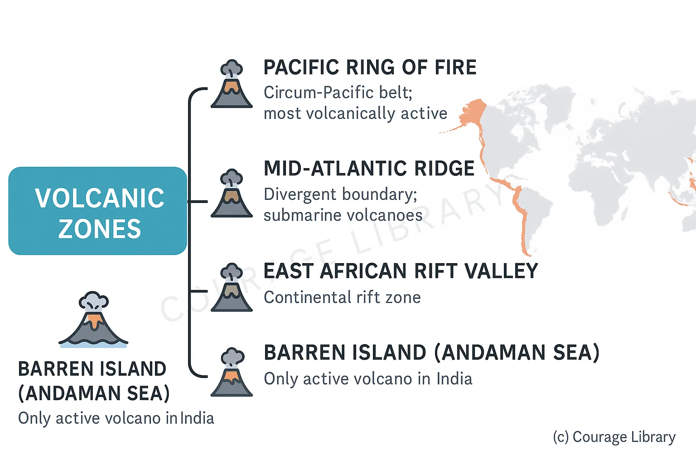
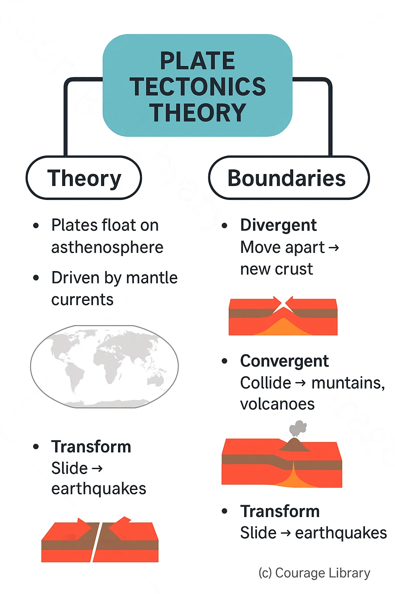

SSC CGL - Detailed Guide 2025
Self-Paced Course
Earth's Structure
Reference: Lucent GK, NCERT Class 6–12
1. Layers of the Earth
The Earth is divided into three concentric layers based on chemical composition:
Crust
- Outermost layer of the Earth.
- Thickness:
- Continental Crust: ~35–70 km
- Oceanic Crust: ~5–10 km
- Composition:
- Continental Crust: Silica and Aluminium (SIAL)
- Oceanic Crust: Silica and Magnesium (SIMA)
- Lightest and thinnest layer, forming 0.5% of Earth's mass.


Mantle
- Located beneath the crust, extending to ~2,900 km depth.
- Composition: Silicate rocks rich in magnesium and iron.
- Divided into:
- Upper Mantle: Includes asthenosphere (semi-fluid)
- Lower Mantle: More rigid
- Source of magma and convection currents driving plate movement.
- Accounts for ~67% of Earth's mass.
Core
- Extends from ~2,900 km to the center (~6,371 km).
- Composed primarily of Iron and Nickel (NIFE).
- Divided into:
- Outer Core: Liquid state
- Inner Core: Solid state
- Generates Earth's magnetic field due to motion of liquid iron.

Layers of the Earth
| Layer | Depth | State | Composition | Key Characteristics |
|---|---|---|---|---|
| Crust | 5 – 70 km | Solid | SIAL (Silica + Aluminium) –
Continental SIMA (Silica + Magnesium) – Oceanic |
Outermost layer; thinnest; forms continents and ocean floors |
| Mantle | 70 – 2,900 km | Semi-solid | Silicate rocks rich in Mg & Fe | Contains asthenosphere (partially molten); source of convection currents |
| Outer Core | 2,900 – 5,100 km | Liquid | Iron (Fe) and Nickel (Ni) | Responsible for Earth's magnetic field |
| Inner Core | 5,100 – 6,371 km | Solid | Iron (Fe) and Nickel (Ni) | Extremely hot and dense; solid due to immense pressure |
Important Discontinuities
| Discontinuity | Between |
|---|---|
| Moho (Mohorovičić) | Crust and Mantle |
| Gutenberg | Mantle and Outer Core |
| Lehmann | Outer Core and Inner Core |
2. Earthquakes and Volcanoes
Earthquakes
- Caused by sudden release of energy in Earth's crust due to tectonic stress.
- Focus: Point within the Earth where the earthquake originates.
- Epicenter: Point on the surface directly above the focus.
- Measured by:
- Seismograph: Records seismic waves
- Richter Scale: Measures magnitude (logarithmic scale)


Types of Seismic Waves
- Primary Waves (P-Waves):
- Longitudinal, travel through solids, liquids, and gases.
- Fastest seismic waves.
- Secondary Waves (S-Waves):
- Transverse, travel only through solids.
- Slower than P-waves.
- Surface Waves (L-Waves):
- Travel along the Earth's surface.
- Slowest, but most destructive.
Volcanoes
- A vent in Earth's crust through which molten rock, ash, and gases are expelled.
- Formed at plate boundaries and hotspots.
Types of Volcanoes
- Active: Currently erupting or likely to erupt (e.g. Mount Etna)
- Dormant: Not erupted recently but may erupt again (e.g. Mount Fuji)
- Extinct: No eruption in historical times and unlikely to erupt (e.g. Arthur's Seat, Scotland)


Volcanic Zones
- Pacific Ring of Fire: Circum-Pacific belt; most volcanically active.
- Mid-Atlantic Ridge: Divergent boundary; submarine volcanoes.
- Mediterranean Belt: Moderate volcanic activity.
- East African Rift Valley: Continental rift zone.
- Barren Island (Andaman Sea): Only active volcano in India.
3. Plate Tectonics, Continental Drift & Mountain Formation
Plate Tectonics Theory
- Describes the movement of Earth's lithospheric plates over the semi-fluid asthenosphere.
- Driven by convection currents in the mantle.
Types of Plate Boundaries
- Divergent Boundaries
- Plates move apart.
- New crust formed.
- Example: Mid-Atlantic Ridge
- Convergent Boundaries
- Plates move towards each other.
- Forms mountains, volcanoes, and trenches.
- Example: Himalayas (Indian plate colliding with Eurasian plate)
- Transform Boundaries
- Plates slide horizontally past each other.
- Causes earthquakes.
- Example: San Andreas Fault


Continental Drift Theory
- Proposed by Alfred Wegener (1912).
- All continents once part of a supercontinent called Pangaea.
- Pangaea split into:
- Laurasia (Northern block)
- Gondwanaland (Southern block)
- Separated by the Tethys Sea.
- Supported by:
- Matching coastlines of South America and Africa
- Fossil records
- Geological similarities
Mountain Formation
Types of Mountains
| Type | Formation Process | Example |
|---|---|---|
| Fold Mountains | Formed by compression at convergent boundaries | Himalayas, Alps, Andes |
| Block Mountains | Formed due to faulting and vertical movements | Black Forest (Germany), Vosges |
| Volcanic Mountains | Formed by accumulation of volcanic material | Mount Fuji, Mount Kilimanjaro |
| Residual Mountains | Formed by erosion of old mountains | Aravalli Hills |
Developed By Satyam Kumar
Next
Start Your SSC CGL Journey Now!
Join Courage Library to experience disciplined study and expert support.
Be a Couragian!